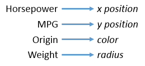
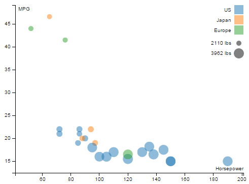
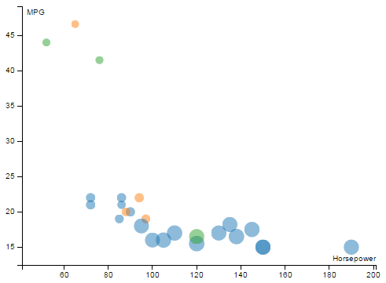
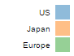

Visualizing the Cars Data
In this tutorial we will build a colorful scatter-plot-style visualization. We will use four dimensions from the Cars dataset, encoded as x and y position, size, and color.
The Cars Dataset
The "Cars" dataset used in this tutorial is a subset of the 1983 ASA Data Exposition dataset that is used in the HCDE 511 course.
You can download the data in Excel format, although it is not necessary to complete the tutorial.
Every row in the data represents an individual type of car. The dataset includes the following fields:
- Model: the car's model name
- Origin: the country where the car is from
- Year: the year the car was manufactured
- Cylinders: the number of cylinders in the car's engine
- Horsepower: how powerful the car's engine is
- MPG: how many miles per gallon the car gets (fuel efficiency)
- Weight: how much the car weighs, in lbs.
Visual Encodings
We will create a visualization of four of these fields. The visual encodings are illustrated in the diagram below:

Here is a screenshot of the final visualization:

1. Initial Setup
We'll skip over some of the basic setup for the visualization, which we already covered in other tutorials. Here are the steps we are skipping:
- Importing the data from the CSV.
- Creating the SVG element.
- Defining scales for the data fields.
- Drawing the chart axes.
You can review the code for these in the JavaScript panel to the right, if you wish. We have also provided some CSS to make the chart look nice, but we won't go into it here.
2. Draw some dots
Our first step will be to render a dot for each car, using SVG <circle> elements.
First, we select all of the elements with class 'dot' (they are theoretical dat this point) and bind the cars data to them.
Add the following code to the bottom of the JavaScript in JS Bin:
var dots = chart.selectAll('.dot')
.data(data);Next, use the D3 data join function enter()
to create a dot for every dot that doesn't yet exist.
For the cars data, this means 26 dots.
dots.enter()
.append("circle")
.attr("class", "dot")
.append("title");Note that we also added an SVG <title> element inside each dot,
which we will use later to show a tooltip.
This doesn't do anything in our visualization, but it is normal at this point to also remove any dots that you don't need:
dots.exit().remove();Now there are dots being rendered, but they don't look like anything. They have default size, color, and position.
Mapping to visual attributes
To actually see our dots, we need to set their position, size, and color.
To do this, we just add the following code:
dots.attr("r", function(d) { return radius(d.weight); })
.attr("cx", function(d) { return x(d.horsepower); })
.attr("cy", function(d) { return y(d.mpg); })
.style("fill", function(d) { return color(d.origin); });In the initial setup, we prepared several D3 "scale" objects
that we are using here (radius, x, y, and color).
You can scroll up through the JavaScript to find how
these are defined.
Adding a legend
The chart as is stands is pictured below:

This is all very nice, but how is a user to know what is meant by size and color? To make things more clear, we'll now add a legend to the chart, in the upper right corner. Here's what we're going for:

We are going to use D3 to build this legend dynamically from some data, just like we are doing with our actual visualization.
The data for the "legend visualization" will be the list of
car origins (['US', 'Japan', 'Europe']), which we can obtain
by calling color.domain() because origins are the domain
for our color scale.
We'll build up the legend in stages. First, add the following code:
var origins = chart.selectAll(".legend.origin")
.data(color.domain())
.enter().append("g")
.attr("class", "legend origin")
.attr("transform",
function(d, i) { return "translate(0," + i * 20 + ")"; });This joins the list of car origins to a "theoretical"
set of .legend and .origin elements.
Because these elements don't exist yet,
they will be created.
We also offset (translate) each part of the legend
by about 20 pixels so that they don't all appear on top of each other.
Now we have a bunch of empty and invisible <g> elements with
their class attribute set to 'legend origin'.
The code below attaches a rectangle of the appropriate color to each
one of these <g> elements:
origins.append("rect")
.attr("x", graphWidth - 18)
.attr("width", 18)
.attr("height", 18)
.style("fill", color);
Finally, we will use similar code to add the text labels:
origins.append("text")
.attr("x", graphWidth - 24)
.attr("y", 9)
.attr("dy", ".35em")
.style("text-anchor", "end")
.text(function(d) { return d; });
A lot of that was just moving stuff around to make it look good.
The highlighted .style() the .text() lines are what
actually produce the color and text labels from the car origins data.
Another legend
We also want to clearly explain what the size of dots means. This mostly similar to the legend above:
var legendOffset = origins.size() * 20 + 5;
//Add a legend for radius/weight
var weights = chart.selectAll('.legend.weight')
.data(range.weight)
.enter().append('g')
.attr('class', 'legend weight')
.attr('transform', function(d, i) { return "translate(0, " + (legendOffset + i * 20) + ")"; });
weights.append("circle")
.attr("cx", graphWidth - 9)
.attr("cy", 10)
.attr("r", radius)
.style("fill", 'gray');
weights.append("text")
.attr("x", graphWidth - 24)
.attr("y", 9)
.attr("dy", ".35em")
.style("text-anchor", "end")
.text(function(d) { return d + " lbs"; });The only new thing here is that we have added a legendOffset to start
drawing this legend below the first legend.